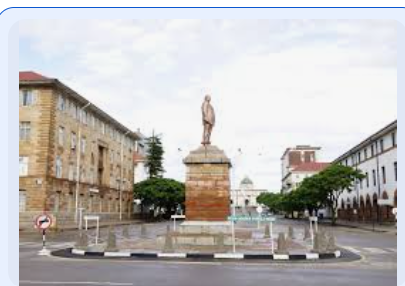

About Me
Hie everyone. A little bit about myself. I am from Zimbabwe , specifically the City of Kings and Queens 'Bulawayo'. Born and raised there. Off all the cities in Zimbabwe, Bulawayo is by far my favourite. It is quiet and easy to navigateI have been a member of The Church of Jesus Christ since 2017 after gaining my testimony of the truthfulness of the gospel. I love the gospel and love the teachings as well, not forgetting singing. I work as a Finance Officer, and as you can see and tell I am expanding to the world of Web, something totally new and different. I feel its time for me to move on and do something. I usually dont have time, but I create time to spend with family, friends doing outdoor activities, indoor games, travelling among other things. I would love to know all of you and hope it will be a great semester.
Bulawayo, Zimbabwe
Content of Bulawayo, located in Zimbabwe, is the country's second-largest city and an important economic and cultural hub. Known as the "City of Kings" or "Kontuthu Ziyathunqa" in the Ndebele language, Bulawayo has a rich history and vibrant atmospheresection. Bulawayo was established in the 19th century by King Lobengula, the Ndebele king, and quickly grew as a major center of trade and commerce. The city has a blend of colonial and indigenous heritage, reflected in its architecture, museums, and cultural sites. Visitors can explore historical landmarks like the Bulawayo Railway Museum, the Natural History Museum, and the Amakhosi Cultural Centre.The city has a lively arts scene, with theaters, galleries, and music venues showcasing Zimbabwean talent. The annual Zimbabwe International Trade Fair (ZITF) held in Bulawayo is a major event that attracts visitors and businesses from around the world.
Resource links: CodePen, W3 Schools, CSSDOG